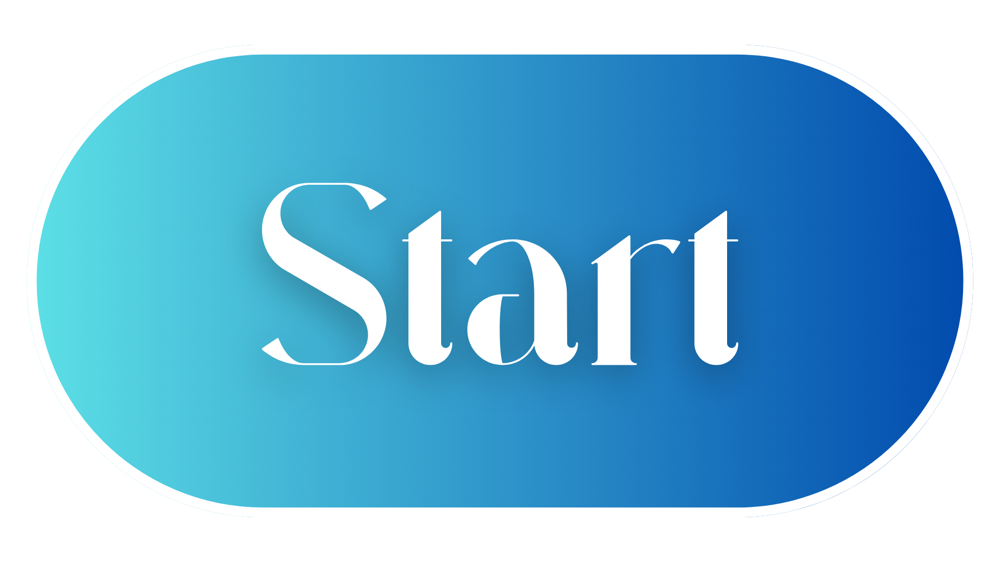

|
|
Selamat datang di TecnoMotive, portal terdepan yang menghadirkan liputan seputar berita mobil canggih terbaru! Di sini, kami mempersembahkan pandangan mendalam tentang teknologi terkini, desain inovatif, dan fitur tercanggih yang memandu perkembangan industri otomotif. Dapatkan pembaruan terkini seputar mobil listrik, teknologi otonom, dan konsep futuristik yang sedang mengubah wajah kendaraan bermotor. Melalui artikel-artikel berkualitas kami, kami berusaha memberikan wawasan mendalam tentang bagaimana teknologi memainkan peran kunci dalam membentuk masa depan mobilitas. TecnoMotive tidak hanya sekadar memberikan berita harian, tetapi juga menyajikan ulasan mendalam, analisis komprehensif, dan pandangan eksklusif dari para ahli industri otomotif. Kami mengundang Anda untuk menjelajahi rubrik-rubrik kami yang mencakup segala hal mulai dari mobil konsep paling futuristik hingga pembaruan terkini tentang pengembangan mobil ramah lingkungan. Saatnya menjadi bagian dari komunitas TecnoMotive yang bersemangat, di mana penggemar otomotif dapat berbagi pengetahuan, pengalaman, dan antusiasme mereka terhadap inovasi dalam industri ini. Bersama-sama, mari kita eksplorasi masa depan mobilitas dan bersiap-siap untuk merayakan kemajuan teknologi dalam dunia otomotif bersama TecnoMotive!
|  |
Find Out More About Us: